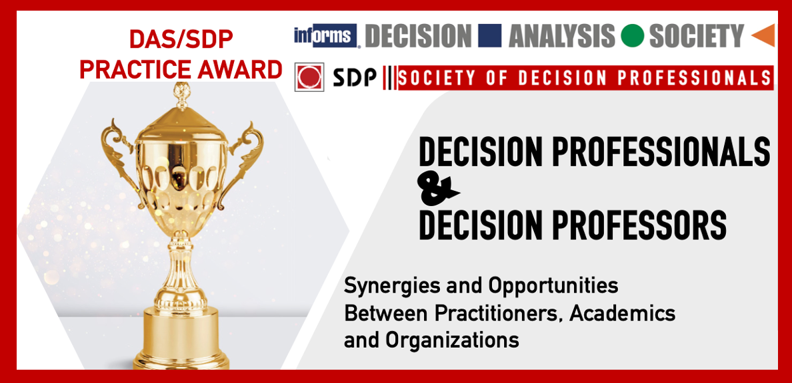

DAS/SDP Practice Award
DAS/SDP Practice Award


Purpose of the Award
|
|
_________________________________________________________________________________________
|
|
|
| 2023 DAS/SDP Practice Award Finalist Presentations |
|
|
|
------------------------------------------------
Past Awardees
2022 WINNERS
- Martine J. Barons, Applied Statistics & Risk Unit, University of Warwick
- David Underdown , The National Archives
- Thais Fonseca, UFRJ Rio de Janeiro
- Joice C. Ribeiro Giacon, Optimum Supply
- Gustavo H. Martins , Optimum Supply
- Kislan Santos, Optimum Supply
- Love Ekenberg, Stockholm University and IIASA
- Adriana Mihai, University of Bucharest, Centre of Excellence for the Study of Cultural Identity (CESIC)
- Nadejda Komendantova, International Institute for Applied Sstems Analysis (IIASA)
- Tobias Fasth, Public Health Agency of Sweden and Dept. of Computer and Systems Sciences, Stockholm University
- Mats Danielson, Stockholm University and IIASA
- Ahmed Al-Salaymeh, The University of Jordan
- Saurabh BansalGenaro J. Gutierrez
- Kelly F. Robinson, Michigan State University
- Mark R. DuFour, Ohio Department of Natural Resources
- Lucas Nathan, Michigan Department of Natural Resources
- Jason L. Fischer, Michigan State University
- Michael Jones, Michigan State University
- Seth J. Herbst, Michigan Department of Natural Resources
- Tammy Newcomb, Michigan Department of Natural Resources
- Steffen A. Borden, Bayer Pharmaceuticals
- Florian Methling, Strategic Decisions Group
- Mark Seidler, Strategic Decisions Group
- Johannes SiebertInsa Sommer, Strategic Decisions Group
- Deepak Veeraraghavan, Strategic Decisions Group
- Rüdiger von Nitzsch, RWTH Aachen University
- Bhavani Shanker UppariSerguei Netessine, INSEAD
- Ioana Popescu, INSEAD
- Rowan P. Clarke, Harvard Business School
- Josephine MacHunter, Arthur Rylah Institute for Environmental Research
- Libby Rumpff, University of Melbourne
- Tracey Regan, Arthur Rylah Institute for Environmental Research
- Nevil Amos, Arthur Rylah Institute for Environmental Research
- Yesim Koca, Eindhoven University of Technology
- Tugce Martagan, Eindhoven University of Technology
- Ivo Adan, Eindhoven University of Technology
- Bram van Ravenstein, MSD Animal Health
- Marc Baaijens, MSD Animal Health
- Oscar Repping, MSD Animal Health
- Francis Marleau Donais, Université Lava
- Irène Abi-Zeid, Université Lava
- Edward Owen Douglas Waygood, Polytechnique Montréal
- Roxane Lavoie, Université Laval
- Corinne Carland, MIT
- Jarrod Goentzel, MIT
- Gilberto Montibeller, Loughborough University
- Valentina Ferretti, London School of Economics and Political Science
- Gabriella Csányi, London School of Economics and Political Science
- Joseph Byrum, Syngenta
- Tracy Doubler, Syngenta
- Greg Doonan, Syngenta
- Craig Davis, Syngenta
- LtC (Ret) Jack Kloeber, Jr., Kromite LLC
- Peiran Zhao, Kromite LLC
- Emilia Silebi, Kromite LLC
- Max Henrion, Lumina Decision Systems
- Mazen Skaf, Strategic Decisions Group
Past Awardees
2021 FINALIST(S)
2020 WINNER(S)
2020 FINALIST
2019 WINNER(S)
2019 FINALIST
2018 WINNER(S)
2017 WINNER(S)
2016 WINNER(S)
2015 WINNER(S)
2014 WINNER(S)
2014 FINALIST